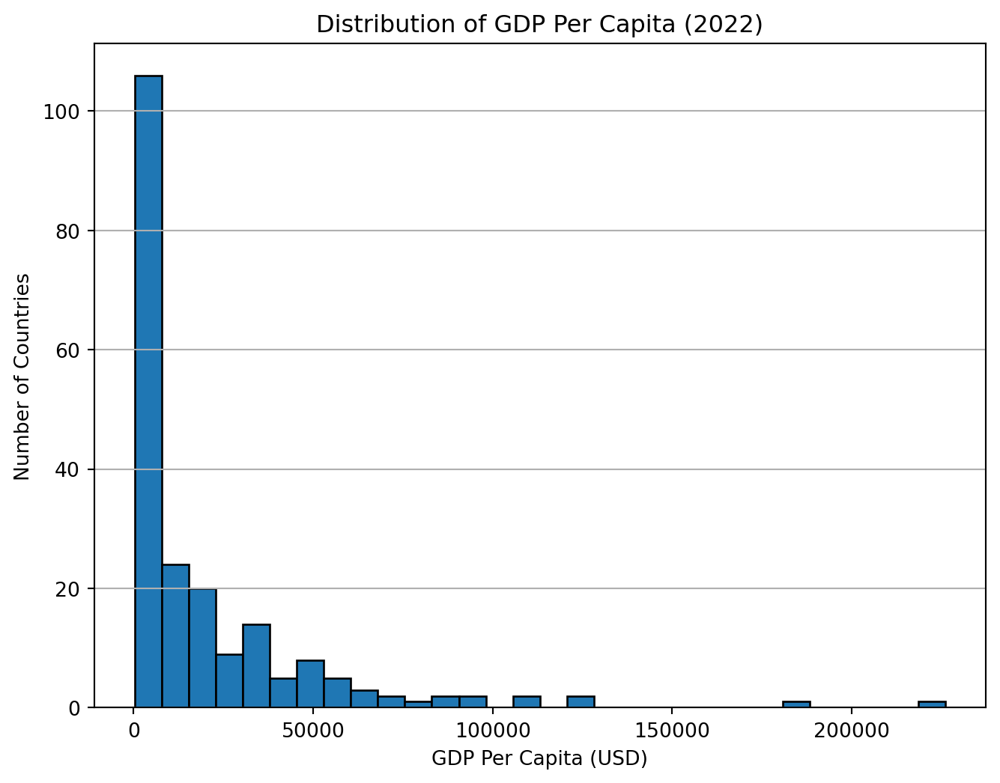
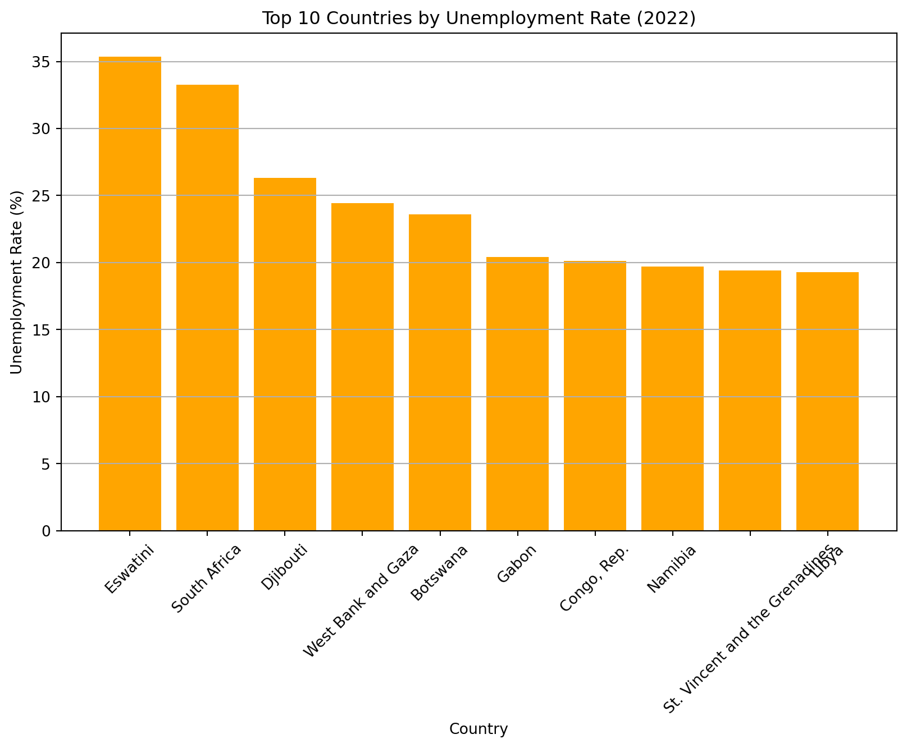
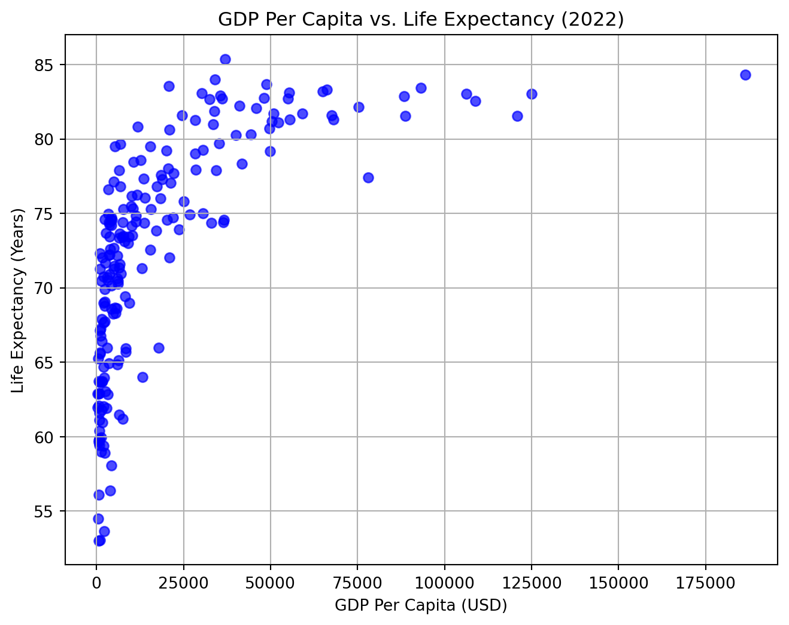

# Install the necessary libraries# pip install pandas# pip install wbgapi# Import the librariesimport pandas as pdimport wbgapi as wb# Define the indicators to downloadindicators = {'gdp_per_capita': 'NY.GDP.PCAP.CD','gdp_growth_rate': 'NY.GDP.MKTP.KD.ZG','inflation_rate': 'FP.CPI.TOTL.ZG','unemployment_rate': 'SL.UEM.TOTL.ZS','total_population': 'SP.POP.TOTL','life_expectancy': 'SP.DYN.LE00.IN','adult_literacy_rate': 'SE.ADT.LITR.ZS','income_inequality': 'SI.POV.GINI','health_expenditure_gdp_share': 'SH.XPD.CHEX.GD.ZS','measles_immunisation_rate': 'SH.IMM.MEAS','education_expenditure_gdp_share': 'SE.XPD.TOTL.GD.ZS','primary_school_enrolment_rate': 'SE.PRM.ENRR','exports_gdp_share': 'NE.EXP.GNFS.ZS'}# Get the list of country codes for the "World" regioncountry_codes = wb.region.members('WLD')# Download data for countries only in 2022df = wb.data.DataFrame(indicators.values(), economy=country_codes, time=2022, skipBlanks=True, labels=True).reset_index()# Delete the 'economy' columndf = df.drop(columns=['economy'], errors='ignore')# Create a reversed dictionary mapping indicator codes to names# Rename the columns and convert all names to lowercasedf.rename(columns=lambda x: {v: k for k, v in indicators.items()}.get(x, x).lower(), inplace=True)# Sort 'country' in ascending orderdf = df.sort_values('country', ascending=True)# Reset the index after sortingdf = df.reset_index(drop=True)# Display the number of rows and columnsprint(df.shape)# Display the first few rows of the dataprint(df.head(3))# Save the data to a CSV filedf.to_csv('wdi.csv', index=False)
(217, 14)
country inflation_rate exports_gdp_share gdp_growth_rate \
0 Afghanistan NaN 18.380042 -6.240172
1 Albania 6.725203 37.197085 4.826688
2 Algeria 9.265516 30.808979 3.600000
gdp_per_capita adult_literacy_rate primary_school_enrolment_rate \
0 357.261153 NaN NaN
1 6846.426143 98.5 96.371231
2 4961.552577 NaN 108.343933
education_expenditure_gdp_share measles_immunisation_rate \
0 NaN 56.0
1 2.744330 86.0
2 4.749247 79.0
health_expenditure_gdp_share income_inequality unemployment_rate \
0 NaN NaN 14.100
1 NaN NaN 10.137
2 NaN NaN 12.346
life_expectancy total_population
0 62.879 40578842.0
1 76.833 2777689.0
2 77.129 45477389.0
I will be exploring the following indicators: “GDP Per Capita”, “Life Expectancy”, and “Unemployment Rate” for the year 2022. The analysis includes summary statistics, handling of missing values, and visualizations to understand the relationships between these variables.
GDP Per Capita
GDP per capita measures a country’s economic output per person and is often used as an indicator of living standards. Higher GDP per capita typically correlates with better access to goods, services, and overall quality of life.
count 207.000000
mean 20520.336828
std 30640.741594
min 250.634225
25% 2599.752468
50% 7606.237525
75% 27542.145523
max 226052.001905
Name: gdp_per_capita, dtype: float64
Insights:
The average GDP per capita is 20520.336828 USD.
The minimum GDP per capita is 250.634225 USD, while the maximum is 226052.001905 USD.
There is a wide range, indicating significant economic disparity across countries.
Distribution of GDP Per Capita
import matplotlib.pyplot as pltplt.figure(figsize=(8, 6))plt.hist(df['gdp_per_capita'].dropna(), bins=30, edgecolor='black')plt.title('Distribution of GDP Per Capita (2022)')plt.xlabel('GDP Per Capita (USD)')plt.ylabel('Number of Countries')plt.grid(axis='y')plt.show()

The distribution is right-skewed, with most countries having a GDP per capita below $10,000. A few high-income countries significantly increase the range.
Life Expectancy
Life expectancy at birth reflects the average number of years a newborn is expected to live under current mortality levels. It serves as an indicator of a country’s overall health and development.
count 209.000000
mean 72.416519
std 7.713322
min 52.997000
25% 66.782000
50% 73.514634
75% 78.475000
max 85.377000
Name: life_expectancy, dtype: float64
Insights:
The mean life expectancy is 72.416519 years.
The lowest life expectancy observed is 52.997000 years, while the highest is 85.377000 years.
The range suggests disparities in healthcare access and living conditions.
Relationship Between GDP Per Capita and Life Expectancy
import matplotlib.pyplot as pltplt.figure(figsize=(8, 6))plt.scatter(df['gdp_per_capita'], df['life_expectancy'], alpha=0.7, color='blue')plt.xlabel('GDP Per Capita (USD)')plt.ylabel('Life Expectancy (Years)')plt.title('GDP Per Capita vs. Life Expectancy (2022)')plt.grid(True)plt.show()
As shown in @fig-gdp-life, there is a positive correlation between GDP per capita and life expectancy.
There appears to be a positive correlation between GDP per capita and life expectancy, especially for lower to middle-income countries. However, the correlation weakens among high-income countries, suggesting other factors influence life expectancy at higher GDP levels.
### Unemployment Rate
The unemployment rate represents the percentage of the labor force that is unemployed but actively seeking employment. It provides insights into the health of a country's labor market and economy.
#### Summary Statistics
::: {#a04a6238 .cell execution_count=7}
``` {.python .cell-code}
unemployment_summary = df['unemployment_rate'].describe()
unemployment_summary
count 186.000000
mean 7.227344
std 5.844462
min 0.130000
25% 3.478000
50% 5.334000
75% 9.261750
max 35.359000
Name: unemployment_rate, dtype: float64
:::
Insights:
The average unemployment rate is 7.227344%.
Some countries experience unemployment rates as high as 35.359000%, reflecting potential economic challenges.
plt.figure(figsize=(10, 6))plt.bar(top_unemployment['country'], top_unemployment['unemployment_rate'], color='orange')plt.title('Top 10 Countries by Unemployment Rate (2022)')plt.xlabel('Country')plt.ylabel('Unemployment Rate (%)')plt.xticks(rotation=45)plt.grid(axis='y')plt.show()

The countries with the highest unemployment rates are primarily developing economies. This may reflect structural economic issues, political instability, or challenges in labor market policies.
As shown in ?@fig-gdp-life, GDP per capita has a clear relationship with life expectancy.
plt.figure(figsize=(8, 6))plt.scatter(df['gdp_per_capita'], df['life_expectancy'], alpha=0.7, color='blue')plt.xlabel('GDP Per Capita (USD)')plt.ylabel('Life Expectancy (Years)')plt.title('GDP Per Capita vs. Life Expectancy (2022)')plt.grid(True)plt.show()

plt.figure(figsize=(10, 6))plt.bar(top_unemployment['country'], top_unemployment['unemployment_rate'], color='orange')plt.xlabel('Country')plt.ylabel('Unemployment Rate (%)')plt.title('Top 10 Countries by Unemployment Rate (2022)')plt.xticks(rotation=45)plt.grid(axis='y')plt.show()
Table 1: Summary Statistics for Selected Indicators (2022)
Summarize the following indicators: -GDP Per Capita (gdp_per_capita) -Life Expectancy (life_expectancy) -Unemployment Rate (unemployment_rate)
The table will include: -Mean (Average value) -Median (Middle value) -Minimum (Lowest recorded value) -Maximum (Highest recorded value) -Standard Deviation (Measure of data spread)
This table provides key summary statistics for GDP per capita, life expectancy, and unemployment rate across all available countries.
import pandas as pd# Select relevant indicatorssummary_stats = df[['gdp_per_capita', 'life_expectancy', 'unemployment_rate']].describe().T# Rename the columns for readabilitysummary_stats = summary_stats[['mean', '50%', 'min', 'max', 'std']]summary_stats.columns = ['Mean', 'Median', 'Min', 'Max', 'Std Dev']# Round values for claritysummary_stats = summary_stats.round(2)# Display the table using Pandassummary_stats
Mean
Median
Min
Max
Std Dev
gdp_per_capita
20520.34
7606.24
250.63
226052.00
30640.74
life_expectancy
72.42
73.51
53.00
85.38
7.71
unemployment_rate
7.23
5.33
0.13
35.36
5.84
Key Observations: - The average GDP per capita is around 20520.34 USD, but there is a large variation, indicating economic inequality. - Life expectancy varies from 53.00 to 85.38 years, with a median of 73.51. - Unemployment rates differ significantly, ranging from 0.13% to 35.36%, highlighting labor market disparities.
Cite the Sources
The World Development Indicators (WDI) dataset provides global economic and social metrics, essential for policy analysis (Bank 2022).
GDP per capita has long been linked to health and economic development, a relationship observed by Preston (1975) in the Preston Curve(Preston 1975).
Additionally, effective data visualization is critical for communicating trends in economic indicators (Knaflic 2015). ## References ::: {#refs}
Quarto
Quarto enables you to weave together content and executable code into a finished document. To learn more about Quarto see https://quarto.org.